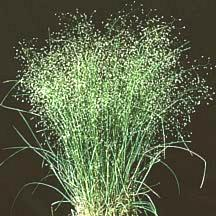
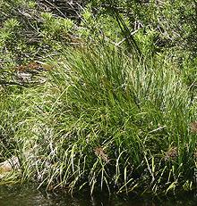
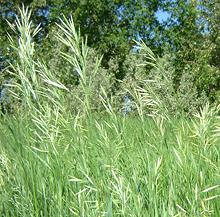
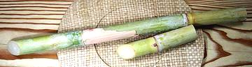

Magnolias

SAFARI
Users
General & History
Other than bamboo and grains, few grasses hold any direct importance in our cuisine - mainly Sugar Cane (the largest crop in the world) and Lemon Grass, an important flavoring ingredient in Southeast Asian cuisines.
Indirectly, other grasses are of great culinary importance as primary feed for cattle, buffalo, sheep, goats and horses.
Varieties
Indian Rice Grass
 [Oryzopsis hymenoides]
Native to western North America from
east of the Cascades in British Columbia to Southern California and
northeastern Mexico, this grass grows in clumps up to 24 inches tall and
12 inches wide. Seeds of this plant were a staple food for the American
Indians, particularly when other crops failed. Today it is used mainly
as a decorative in xeriscapes and in flower arrangements.
Photo by U.S. Department of Agriculture = public domain.
Lemon Grass
 [Fever Grass, Ta Khrai, Takrai (Thai); Xa, Sa chanh (Viet); Tanglad
(Philippines); Zabalin (Burma); Si khai, Sing khai (Laos); Bai mak nao,
Slek krey sabou, Kuel skey (Cambodia); Sera (Sri Lanka, India); Ghanda,
Bhustrina (India); Serai (Malaysia); Sereh (Indonesia); Citronella
(French); Cymbopogon citratus and to a lesser extent other
Cymbopogon species (or subfamily Panicoideae)]
[Fever Grass, Ta Khrai, Takrai (Thai); Xa, Sa chanh (Viet); Tanglad
(Philippines); Zabalin (Burma); Si khai, Sing khai (Laos); Bai mak nao,
Slek krey sabou, Kuel skey (Cambodia); Sera (Sri Lanka, India); Ghanda,
Bhustrina (India); Serai (Malaysia); Sereh (Indonesia); Citronella
(French); Cymbopogon citratus and to a lesser extent other
Cymbopogon species (or subfamily Panicoideae)]
C. citratus is a lemon scented grass native to Southeast Asia. It is essential to the cuisines of all of Southeast Asia, including the Philippines. It is also used in Sri Lanka, parts of southern China, and in the Caribbean, but is not used in cooking in India.
C. flexuosus, intensively grown in India, is mostly used for oils, perfumes and medicinals, though it can be used in cooking.
C. nardus is the industrial strength version,
unpalatable to both people and livestock but distilled into citronella
oils used as insect repellants, antiseptics and flavorings. It is grown
as a decorative in Florida and California but is a serious and difficult
to defeat invader of pasture land in Africa.
Details and Cooking.
Palmiet
 [Prionium serratum]
This semi-aquatic grass, native to South Africa. Older plants build a
stalk about 4 inches in diameter, covered with the bases of old leaves,
with a crest of fresh leaves at the top. It builds dense mats which are
very important to erosion and flood water control. Early Dutch settlers
in South Africa used young shoots of this plant in salads.
Photo by Paul Venter distributed under license
Creative Commons
Attribution-ShareAlike 3.0 Unported.
Sweet Grass
 [Buffalo grass, Bison grass, Vanilla grass, Mary's grass, Seneca grass; Holy grass (UK); Hierochloe odorata]
Native though both North America and northern Eurasia, this grass is much liked by both the American Buffalo and the European Bison. Among humans it has been widely used in ceremonies - today particularly by American Indians as a purifying incense. Braids of sweet grass can be ordered from numerous emporiums supplying gear for pagan rituals and it is recommended for purifying rooms before ceremonies just as sage is used.
Sweet grass also finds considerable use for weaving baskets and for
flavoring alcoholic beverages, particularly Polish Zubrówka Vodka.
The U.S. Food and Drug Administration has declared sweetgrass toxic and
has banned import of Zubrówka except in an artificial version made
with chemical flavorings, "for our protection".
Photo by
Julia Adamson distributed under license
Creative Commons
Attribution ShareAlike v3.0, attribution required.
Sugar Cane
 [Saccharum officinarum (and some other species)]
Native to southern India and Southeast Asia, sugar cane is now grown in the tropics worldwide and is the world's largest crop. Total world production is nearly 1-3/4 billion tons per year. It is a multi-stemmed grass that grows to about 13 feet high with stems up to 2 inches in diameter. The stems are about 15% sugar.
Cultivation is thought to have begun in in New Guinea about 8000 years ago, and by 5000 years ago it was grown by the Indus valley civilizations. While the ancient Greeks knew of it, it was not grown west of Pakistan until around 1300 years ago when Arab traders brought it from Southeast Asia to the Near East, North Africa and Spain. Today, Brazil is the top producer by a wide margin, followed by India and China. It is also very important to the economies of the Caribbean islands.
For a lot more about cane sugar see our
Sweeteners page.
Health & Nutrition
Of the grasses on this page, none presents much of a health or nutrition impact except sugar cane - and it's impact is almost entirely negative. Evolution programmed humans to seek out sweets, which were very rare in nature. Unfortunately sweets are not at all rare in our food processing industry, and this predilection for them works seriously against our good health. Obesity, diabetes, tooth decay, vulnerability to infectious diseases, and organ failures are the result.